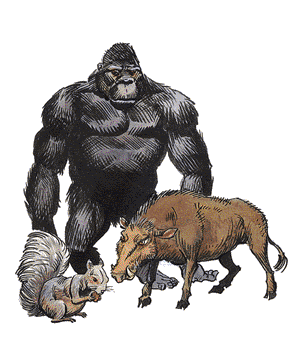

2140
| #AP | AC | MV | HD | THAC0 | # AT | Dmg/AT | Morale | XP Value | |
|---|---|---|---|---|---|---|---|---|---|
| Ape, Carnivorous | 2-8 | 6 | 12, 9 in trees | 5 | 15 | 3 | 1-4/1-4/1-8 | Steady (11-12) | 175 |
| Baboon, Wild | 10-40 | 7 | 12, 12 in trees | 1+1 | 19 | 1 | 1-4 | Unsteady (5-7) | 35 |
| Badger | 2-5 | 4 | 6, Br 3 | 1+2 | 19 | 3 | 1-2/1-2/1-3 | Average (8-10) | 35 |
| Banderlog | 4-24 | 6 | 6, 12 in trees | 4 | 15 | 1 | 2-5 | Average (8-10) | 120 |
| Bhaergala | 1 | 6 | 15 | 4+4 | 15 | 3 | 1-6/1-6/1-8 | Elite (13-14) | 650 |
| Boar, Wild | 1-12 | 7 | 15 | 3+3 | 17 | 1 | 3-12 | Average (8-12) | 175 |
| Chattur | 2-24 | 7 | 12 | 1-1 | 20 | 1 | 1-4 (or weapon) | Average (8-10) | 15 |
| Cooshee | 1-8 | 5 | 15, sprint 24 | 3+3 | 17 | 3 | 1-4/1-4/2-8 | Steady (11-12) | 270 |
| Dakon | 6-60 | 5 | 6 | 1+1 | 20 | 2 | 1-10/1-10 | Champion (15-16) | 65 |
| Debbi | 1-8 | 7 | 15, climb 6 | 1+1 | 19 | 1 | 1-4 | Unsteady (5-7) | 65 |
| Goat | 5-20 | 7 | 15 | 1+2 | 19 | 1 | 1-3 | Average (8-10) | 35 |
| Gorilla | 1-4 | 6 | 12 | 4+1 | 17 | 3 | 1-3/1-3/1-6 | Average (8-10) | 175 |
| Hsing-sing | 2-20 | 6 | 6, Sw 9 | 2+1 | 19 | 1 | 1-6 (or weapon) | Average (8-10) | 65 |
| Hyena | 2-12 | 7 | 12 | 3 | 17 | 1 | 2-8 | Unsteady (5-7) | 65 |
| Jackal | 1-6 | 7 | 12 | ½ | 20 | 1 | 1-2 | Unreliable (2-4) | 7 |
| Losel | 3-30 | 7 | 6, 9 in trees | 2 | 19 | 3 | 1-3/1-3/1-4 | Unsteady (5-7) | 120 |
| Spider Monkey | 20-60 | 6 | 18, climb 18 | 1hp | 18 | 1 | 1 | Fanatic (17-18) | 1 |
| Porcupine, Black | 1-2 | 6 | 9, climb 2 | ½ | 20 | 1 | 1-3 | Unreliable (2-4) | 15 |
| Porcupine, Brown | 1-2 | 6 | 9, climb 2 | ½ | 20 | 1 | 1-4 | Unreliable (2-4) | 15 |
| Rothé | 2-20 | 7 | 9 | 2 | 19 | 3 | 1-3/1-3/1-8 | Elite (13-14) | 35 |
| Skunk | 1-6 | 8 | 12 | ¼ | 20 | 1 | 1 | Unsteady (57) | 35 |
| Sleek | 1-10 | 3 | 36 | 2+1 | 19 | 3 | 1-4/1-4/2-12 | Steady (11-12) | 65 |
| Stag, Wild | 1-4 | 7 | 24 | 3 | 17 | 1 or 2 | 1-3/1-3 or 2-8 | Unsteady (5-7) | 65 |
| Stench Kow | 15-60 | 2 | 15 | 3+3 | 17 | 1 | 2-8 | Average (8-10) | 175 |
| Taer | 10-40 | 4 | 18 | 3+6 | 17 | 3 | 1-6/1-4/1-4 | Steady (11-12) | 270 |
| Tyrg | 1-10 | 5 | 18 | 5-8 | 5-6 HD: 15 7-8 HD: 13 | 1 | 1-12 | Elite (13-14) | 5 HD: 270 6 HD: 420 7 HD: 650 8 HD: 975 |
| Warthog | 1-6 | 7 | 12 | 3 | 17 | 2 | 2-8/1-8 | Average (8-10) | 120 |
| Weasel | 1-2 | 6 | 15 | ¼ | 20 | 1 | 1 | Steady (11-12) | 7 |
| Wolverine | 1 | 5 | 12 | 3 | 17 | 3 | 1-4/1-4/2-5 | Steady (11-12) | 120 |
Mammals are the most common of the vertebrate. Generally born alive, mammals possess hair.
Warm-blooded, mammals maintain a single body temperature, regulated by an internal thermostat. Most mammals are harmless to humanoids and they are often trained to perform a specific function.
Ape, Carnivorous: Carnivorous apes gain a +2 to their surprise rolls. They eat anything they can kill.
Baboon, Wild: Wild baboons are large, herbivorous primates that are characterized by long arms and legs, large dog-like muzzles, and sharp canine teeth.
Badger: Badgers are vicious little creatures that prefer to run from danger than fight. If cornered, the badger will fight, attempting to bite the tender throat of its opponent.
Banderlog: Banderlogs resemble baboons with green skin and brown fur. They throw retch plant fruit or coconuts at enemies. Coconuts cause 1d4+1 points damage while retch plant fruit splash a 5-foot radius area with nauseating fluids. Those caught in the splash, retch for three rounds and their Strength is reduced by half for the next hour (no saving throw allowed).
Bhaergala: This predator jumps its prey from great heights. It can drop from as high as 60 feet, causing maximum damage plus 1d6 for every 10 feet dropped. This beast heals 2 hit points every day and gains a +3 to all saving throws vs. poison. Four times a day, the bhaergala can turn spells as the ring of spell turning.
Boar, Wild: Wild boar continue to attack until they are reduced to -7 hit points. The giant boar is often called an alothere.
Chattur: Chatturs, called space bandits, are small mammals that exhibit traits of both primates and rodents. Not very combative, they fight in defense of their nests, kin, or friends.
Cooshee: Known as elven dogs, they only bark to warn their elven masters of danger. They can strike bipedal opponents with front paws to knock man-sized or smaller creatures down.
Dakon: Dakons are intelligent apes with a reasonable grasp of the common tongue. When attacking it gains a +2 bonus.
Debbi: This desert scavenger, a hyena crossbreed, can cause fear by stamping its feet in a slow, rhythm and calling forth magical power that makes its fur crackle and spark. This fear lasts for two rounds.
Goat: When a goat charges, it gains a +2 attack bonus and does an additional 1-2 points damage.
Gorilla: The gorilla is non-aggressive and shy, but fights fiercely when threatened or cornered.
Hsing-sing: The hsing-sing are a recluse ape-like race believed to personify the principles of pacifism and harmony with nature. However, once a year, for 2d6+4 days, the males gather into raiding bands and complete the “war season”. Their bands attack humanoid settlements on the edge of their territory. Such attacks are impartial; pillaging good and evil creatures alike. To maximize the advantage of surprise, the hsing-sing rarely attack the same settlement two years in a row.
Hyena: Often confused as a canine, the hyena taunts enemies with its nervous, high-pitched howl.
Jackal: Jackals are timid scavengers that run from the threat of other predators. When attacking, the jackal darts in to bite its victim and quickly retreats to a safe distance. If more than one jackal is trying to down an animal, they attack in a haphazard fashion with little or no coordination of effort.
Losel: An arboreal orc/baboon cross, losel resemble primitive humans in many respects. They can throw stones up to 20 yards for 1d4 points damage.
Monkey Spider: Measuring 1-inch in length, monkey spiders fight creatures their own size, avoiding combat with larger creatures. If forced to battle such creatures, the monkeys jump and bite at an eye. The bite causes extreme pain and the victim must hold his eye and take no other action for a round, giving the monkey a chance to run away. Monkey spiders can jump 10 feet down or 5 feet forward and can climb anything a typical spider can.
Porcupine: Porcupines are covered with long barbed quills. The creature is unable to throw its quills. Generally, a predator who chases the fleeing creature gets a mouthful of quills which causes the damage cited above.
Rothé: The rothé (pronounced "roth-AY") is a musk ox-like creature with an aversion to light. It prefers to live underground near lichen and moss.
Skunk: Anyone within a skunk's 10x10x10-foot cloud of musk must save vs. poison or be nauseated for 1-4 rounds, losing 50% of Strength and Dexterity.
Sleek: This ermine-like mammal surprises opponents on 1-5 on 1d6. On an attack roll of 19 or 20, the sleek opens a major vein, causing 2d6 points of damage. Every round thereafter, the victim suffers 1d6 more points damage until the wound is wrapped with a tourniquet, direct pressure, or magical healing.
Stag, Wild: Wild stags are the aggressive males of the deer herds. Normally docile and passive, they defend their herds against all but the most fearsome opponents.
Stench Kow: Stench Kine are the cattle of the lower planes. They are immune to all forms of cold, fire, and poison. In close quarters, their breath and bodies are so foul, a save vs. poison must be made or the character is affected as if struck by a stinking cloud spell. The save must be made every three rounds of exposure.
Taer: These vile primates live in cold mountain caves. They throw spears before closing in for hand-to-hand.
Tyrg: When in melee, tyrgs emit fierce howls that mildly stun their victims (+2 penalty to initiative and -2 penalty to attack rolls) for the next three rounds (no saving throw allowed). These are dog crossbreeds that move silently 75% of the time and have a +2 bonus to avoid surprise.
Warthog: The warthog is so aggressive, it continues to attack until it reduced to -7 hit points.
Weasel: Weasels, related to minks and stoats, are common predators, though they are hunted for their pelts, or for pets.
Wolverine: When engaged in battle, the wolverine becomes a most fearsome adversary, giving it a +4 bonus to its attack roll.
Minimal Mammals: Minimals are half-sized breeds of otherwise normal animals. They have the same physical and behavioral traits of their full-sized relatives, although most are not dangerous. Minimals generally have one-half the number of Hit Dice with a corresponding drop in THAC0, a +2 Armor Class penalty, and a
Giant Mammals: Giant mammals are double-sized breeds of otherwise normal animals. They have the same physical and behavioral traits of their full-sized relatives. These giants generally have double the number of Hit Dice, a corresponding rise in THAC0, a -2 AC bonus, and a +2 Morale bonus. The damage caused by the attacks of a giant mammal is twice that of the full-sized relative.
◆ 1224 ◆